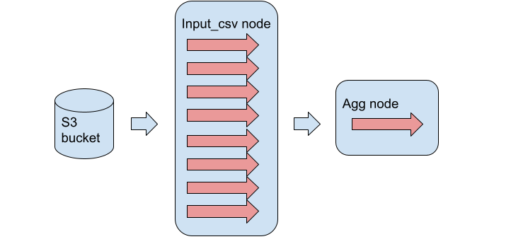
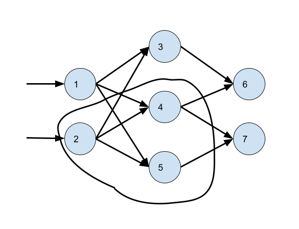

Quokka Runtime API documentation
Programming Model
A note about the name: the name is inspired by the Apache Flink icon, which is a chipmunk. A quokka is a marsupial that resembles a chipmunk.
The Quokka lower-level runtime API (henceforth referred to as the runtime API) allows you to construct a task graph of nodes, which each perform a specific task. This is very similar to other DAG-based processing frameworks such as Apache Spark or Tensorflow. For example, you can write the following code in the runtime API to execute TPC-H query 6:
task_graph = TaskGraph()
lineitem = task_graph.new_input_csv(bucket,key,lineitem_scheme,8,batch_func=lineitem_filter, sep="|")
agg_executor = AggExecutor()
agged = task_graph.new_task_node({0:lineitem}, agg_executor, 1, {0:None})
task_graph.initialize()
task_graph.run()
There are perhaps a couple of things to note here. Firstly, there are two types of nodes in the runtime API. There are input nodes, declared with APIs such as new_input_csv or new_input_parquet, which interface with the external world (you can define where they will read their data), and task nodes, declared with APIs such as new_task_node, which take as input the outputs generated from another node in the task graph, either an input node or another task node. In the example code above, we see that the task node agged depends on the outputs from the input node lineitem. Note that there are no special "output nodes", they are implemented as task nodes.
Quokka's task graph follows push-based execution. This means that a node does not wait for its downstream dependencies to ask for data, but instead actively pushes data to its downstream dependencies whenever some intermediate results become available. In short, execution proceeds as follows: input nodes read batches of data from a specified source, and pushes those batches to downstream task nodes. A task node exposes a handler to process incoming batches as they arrive, possibly updating some internal state (as an actor in an actor model), and for each input batch possibly produces an output batch for its own downstream dependencies. The programmer is expected to supply this handler function as an executor object (more details later). Quokka provides a library of pre-implemented executor objects that the programmer can use for SQL, ML and graph analytics.
Each task node can have multiple physical executors, sometimes referred to as channels. This is a form of intra-operator parallelism, as opposed to the inter-operator parallelism that results from all task nodes executing at the same time. These physical executors all execute the same handler function, but on different portions of the input batch, partitioned by a user-specified partition function. A Spark-like map reduce with M mappers and R reducers would be implemented in Quokka as a single mapper task node and a single reducer task node, where the mapper task node has M channels and the reducer task node has R channels. In the example above, we specified that the input node lineitem has 8 channels, and the task node agged has only 1 channel. The partition key was not specified ({0:None}) since there is no parallelism, thus no need for partitioning. The situation looks something like the following picture:

Quokka keeps track of all the channels and schedules them onto physical computing resources. For the engine, two channels from different task nodes are on more or less equal footing -- they can be scheduled on the same hardware or different hardware. A channel from an input node completes execution when there's no more inputs to be read or if all of its downstream dependencies have completed execution. A channel from a task node completes execution when:
- all of its upstream sources have completed execution
- if its execution handler decides to terminate early based on the input batch and its state (e.g. for a task node that executes the limit operator in a limit query, it might keep as local state the buffered output, and decide to terminate when that output size surpasses the limit number)
- if all its downstream dependencies have completed execution.
By default, all channels start execution at once. This does not necessarily mean that they will start processing data, this means that they will all start waiting for input batches from their upstream sources to arrive. One could specify that an input node delay execution until another input node has finished. For example to implement a hash join one might want to stream in one table to build the hash table, then stream in the other table for probing.
The runtime API is meant to be very flexible and support all manners of batch and stream processing. For example, one could specify an input node that listens to a Kafka stream, some task nodes which processes batches of data from that stream, and an output node that writes to another Kafka stream. In this case, since the input node will never terminate, and assuming the other nodes do not trigger early termination, the task graph will always be running.
As a result of this flexibility, it requires quite a lot of knowledge for efficient utilization. As a result, we aim to provide higher level APIs to support common batch and streaming tasks in SQL, machine learning and graph analytics. Most programmers are not expected to program at the runtime API level, but rather make use of the pre-packaged higher-level APIs.
Stateful Actors
Let's talk more about states in Quokka. Channels in task nodes are stateful operators in an actor programming model. The key property of stateful operators in Quokka is confluence: in the context of nondeterministic message delivery, an operation on a single machine is confluent if it produces the same set of outputs for any nondeterministic ordering and batching of a set of inputs. (cite CALM work) Note that the output itself can also be produced in any order. It’s easy to see that any composition of confluent operators is still confluent. We relax the confluent definition somewhat here to accept potentially different output sets, assuming they are all semantically correct. For example an operator that implements the LIMIT N clause in SQL can admit any of N input records it sees.
Confluence is a very nice property to have in general, more so for streaming systems. Let’s imagine a stateful operator with two different upstream operators producing messages. It is very nice if the system’s correctness does not depend on the order in which the two upstream operators produce the messages, which could depend on network delay, task scheduling, etc. This is critical for performance in a push-based framework since a node should never wait on any one of its input streams. This also has nice fault-tolerance properties as we will describe later. This is perhaps the key difference between Quokka and streaming-centric systems like Flink. In Flink you can totally write pipelines where the outputs depend very strongly on the order the inputs are supplied. In Quokka it is not allowed. (Really at this point, it's only "not recommended" -- there are no checks in place to see if your actor is confluent or not. What's guaranteed is that all the operators in the libraries supplied follow this model. Enforcing this is future work.) Note that for an operator with many input streams, confluence means that both the intra-stream and the inter-stream order do not matter.
What are some examples of confluent stateful operators? First let's categorize the world of stateful operators we'd like to implement in data analytics. There are two important cateogories: nonblocking and blocking. Blocking operators cannot emit any outputs to their downstream children until all of their inputs have been processed. Examples are any kind of aggregation and sort. For (naive) aggregation, the stateful operator does not know it has the final result for any of its aggregation keys until it has seen all of its inputs. For sorting, the stateful operator cannot guarantee that it would emit results in sorted order until it has received all its inputs. We call any operator that is not blocking non-blocking. Example non-blocking operators are map, filter, projection and join. Blocking operators are pipeline breakers, and negate the benefits of using a streaming framework like Quokka.
Confluence is easy to reason about for blocking operators. The blocking operator emit only one output, at the very end. We just have to make sure that this output is the same regardless of the order in which we supply the operator's inputs. Since this operator is typically a function of the final state, we just have to ensure that the final state is the same. If we imagine that each incoming message changes the state of the operator by function f, then it's easy to see that as long as f is commutative this is true. For example, any kind of aggregation is commutative, the merge step in merge-sort is commutative, etc.
Confluence is harder to reason about for nonblocking operators. We must guarantee that regardless of the order the input batches are supplied, the set of output batches do not change. Let’s say we only have two incoming messages, m and n, to a node with starting state S. Then the outputs produced by giving m first to S, changing the state S to f(m, S), while producing output o(m, S) and then giving n to S, changing the state to f(n, f(m,S)) while producing output o(n, f(m,S)), which is {o(m,S), o(n,f(m,s))} is the same as if we gave the outputs in the reverse order. Note that this assumes that m and n are all the messages the node will see. Confluence is about eventual consistency.
While in general there are many ways to achieve this kind of behavior as long as only monotonic operations are applied to the state at each input batch (Bloom), in Quokka all the stock non-blocking operators take the approach of setting the state as sets of immutable batches of data, that can only be added to. This is clearly monotonic. If you are writing a stateful operator for Quokka, this is the recommended approach. What this means is that it is impossible to perform operations that require a specific batch amongst the set of batches, such as list indexing, since ordering of the batches in a set in the state is undefined. Most meaningful operations take the incoming message and produce an output that depends on the entire set, or not at all. An example of a confluent stateful operator in Quokka is a join. The code can be roughly summarized as follows:
state0 = set()
state1 = set()
for each input:
if input from stream0:
state0.add(input)
emit set(input.join(i) for i in state1)
else:
state1.add(input)
emit set(i.join(input) for i in state0)
Note that there is in fact a non-monotonic domain-specific optimization we can make that will preserve confluence in the case of a primary key join. Any input streamed in from stream0 can guarantee that any future records from that table will not have the same key value. Thus all state1 related to the record’s key can be safely deleted. Quokka currently does not implement this optimization.
Fault tolerance (future work)
The current theory is a bit complicated. I am still thinking through how this should work exactly, but the hopefully the gist gets through.
Given our group of confluent stateful operators, how do we achieve fault tolerance? A Quokka application can be thought of as a DAG, where each node corresponds to a channel, from one of the task nodes. Each node is assigned to a physical hardware instance. Quokka is designed to expect many nodes to be assigned to one physical instance. For example, let's imagine the following case, where the nodes circled belongs to machine A and the rest belong to machine B, and nodes 1 and 2 are channels of the input node. 3, 4 and 5 are non-blocking operators, 6 and 7 are blocking operators.

Quokka follows a checkpoint-based system where each channel periodically asynchronously checkpoints its local state to persistent storage (AWS S3). Note that this is quite efficient given the types of states we typically have, such as (typically) small intermediate aggregation results and sets of batches that are monotonically added to. (This is definitely an area of future work)
If you've read the Spark streaming paper, you would be smirking right now: "yes checkpoints are great, but you must turn off the entire system when a machine fails to sync it back to the latest good state, and then reapply all the inputs." Yes that is true for a general-purpose streaming system like Flink or Naiad. Coordinated global rollbacks really suck. But in Quokka where all the stateful operators are confluent, this need not happen.
What happens when machine A dies? TLDR: machine B can keep doing work as if nothing is wrong, while machine A's workload eventually gets rescheduled.
The gory details: nodes 1, 3, 6 and 7 carry on with life (they won't even know machine A just died). 1 will notice that it can no longer send messages to 4 and 5. That's ok, it will just buffer those messages. 3 and 6 will realize that they have fewer incoming messages now. 7 will notice that they have no more incoming messages. That's ok, they can work on their backlog. The system then goes about recovering 2, 4 and 5. It will request a new machine to schedule 2, 4 and 5, or simply schedule them to machine B. 2 is a channel of an input node, which has no state.
In Quokka, all message sent between channels are tagged with a sequence number. The number starts from 0 and monotonically increases. This way, the task node discards messages with a wrong sequence number. The state of a stateful operator is also tagged with a number. The state number starts from 0 and monotonically increases every time. When an operator checkpoints, it writes its state, its state number, and the latest sequence number it expects from its inputs. A consistent checkpoint contains all this information.
Quokka will look at the last consistent checkpoint of nodes 4 and 5, and find the minimum of all the latest sequence numbers across both consistent checkpoints. This is the batch that 2 will now have to start to produce. Let's say that node 4 had the smaller latest sequence number. Then node 4 will immediately start catching up. Node 5 will look at the incoming batches, find that their sequence numbers are smaller than expected, and proceed to ignore all of them. Eventually, node 5 will start recovering state as well. After both nodes catch up to the point where they died, node 6 and 7 will start accepting messages from node 4 and node 5 since now their messages have valid sequence numbers.
What if in this example, node 2 was not an input node but a task node? Then the dead subgraph has no way of re-reading the input. Long story short, each node needs to buffer outgoing messages, until its children notify it that the state change affected by that outgoing message has been persisted to a checkpoint. This way, messages can be replayed when needed.
All this while, machine B has been carrying on with its life. This means that if we started out in a load balanced way, then this fault recovery has introduced stragglers -- node 4 and 5 will now finish after node 3. This is actually okay from a resource-usage point of view. Note that nowhere in this process are we wasting resources across the cluster, as seen in global synchronous rollbacks. Only the lost states need to be recomputed, similar in vein to the fault-tolerance mechanism in Spark. In addition, fault recovery required minimal communication with workers that did not experience a fault, minimizing fault recovery overhead. Stragglers are okay for Quokka, we will mediate them through the dynamic scheduling mechanism described in the next section.
Scheduling and Autoscaling (future work)
There are two auto-scaling strategies in Quokka. The first is automatic, while the second might require some user input. Recall that Quokka is designed to expect many channels to be assigned to the same physical hardware. But first, let's talk about how Quokka schedules channels to hardware, assuming that the graph is static, and the number and type of machines are fixed.
Firstly, in the current runtime API, when instantiating a task node or input node, the user manually specifies how many channels are there and where those channels go. Dynamic channel scheduling is done when programming in higher-level APIs.
We observe that each channel is in effect an independent stateful oeprator that can be scheduled independently. However, different scheduling strategies entail different communication costs. If channel A sends a large volume of messages to channel B, then we should schedule them on the same machine. Note that contrary to intuition, there is no benefit at all in scheduling multiple channels from the same input node or task node on the same machine apart from parallelism, since they never talk to each other.
Channel scheduling can be dynamic, in the sense that a channel can be moved from one physical machine to another in a very straight-forward way. The self-contained nature of an actor is an oft-quoted strength of the actor model. All that needs to happen is for Quokka to transfer the state of the actor to another node (which could be done asynchronously after the transfer decision is made), and change the partition function for the channel's parents so that the appropriate physical machine receives the incoming messages. The data transfer cost is the only cost in moving an actor.
Different criteria can be used to decide if a channel should be moved to another physical machine. These could include machine specific characteristics, such as limited memory available or high CPU usage on the current machine, or the lack thereof on the other machine. Quokka can also use channel-specific information, for example if the system observes the channel transfering large amounts of data to another channel on another machine and determines that the cost in moving this channel can be overcame by the benefit in data locality achieved after the move.
The stragglers introduced by fault recovery can be mediated in this fashion. Node 1 and 3 will finish before node 2 and 4/5, creating less resource usage on machine B. The system will then try to move one of node 4/5 onto machine B.
Manual autoscaling using combiner functions
To be written.
TaskGraph API
new_input_csv (bucket, key, names, parallelism, ip='localhost',batch_func=None, sep = ",", dependents = [], stride = 64 * 1024 * 1024)
Currently, new_input_csv only supports reading a CSV in batches from an AWS S3 bucket.
Required arguments in order:
- bucket: str. AWS S3 bucket
- key: str. AWS S3 key
- names: list of str. Column names. Note that if your rows ends with a delimiter value, such as in TPC-H, you will have to end this list with a placeholder such as "null". Look at the TPC-H code examples under apps.
- parallelism: int. the runtime API expects the programmer to explicitly state the amount of intra-op parallelism to expose. 8 is typically a good number.
Keyword arguments:
- ip: str. the IP address of the physical machine the input node should be placed. Defaults to local execution.
- batch_func: function. the user can optionally pass in a function to execute on the input CSV chunk before it's passed off to downstream dependents. Currently the input CSV is parsed into a Pandas Dataframe, so batch_func can be any Python function that can take a Pandas Dataframe as input and produces a Pandas Dataframe. This can be done to perform predicate pushdown for SQL for example.
- sep: str. delimiter
- dependents: list of int. an input node can depend on other input nodes, i.e. only start once another input node is done. For example to implement as hash join where one input might depend on another, one could do the following:
a = new_input_csv(...)
b = new_input_csv(...,dependents=[a])
- stide: int. how many bytes to read from the input S3 file to read at a time, default to 64 MB.
Returns: a node id which is a handle to this input node, that can be used as the sources argument for task nodes or dependents arguments for other input nodes.
new_input_parquet(bucket, key, names, parallelism, columns, skip_conditions, ip='localhost',batch_func=None, sep = ",", dependents = [], stride = 64 * 1024 * 1024)
Not yet implemented.
new_task_node(sources, functionObject, parallelism, partition_key, ip='localhost')
Instantiate a new task node with an executor object that defines the handler function which runs on each incoming batch.
Required arguments in order:
- sources: dict of int -> int. the upstream sources that feed batches to this task node. Expects a dictionary, where the keys are integers and values are node ids (also stored as integers). This in effect names the source nodes. i.e. if you specify
{0: source_node_id_x, 1:source_node_id_y}, from the perspective of this task node you are calling the batches coming from source_node_id_x source 0 and the batches coming from node_id_y source 1. You will make use of these identifiers writing the executor class's handler function for incoming batches. - functionObject: an executor object which defines the input batch handler function. More details on this in the next section. You can write your own or use a pre-supplied one from the sql, ml or graph packages.
- parallelism: int. the runtime API expects the programmer to explicitly state the amount of intra-op parallelism to expose. Think carefully about this choice. Computationally intensive tasks might benefit from parallelism, while simple tasks such as aggregation might not.
- partition_key: dict of int -> in. This argument expects a dictionary with a key for each key in the sources dict. It describes how the input batches should be partitioned amongst the channels. If the value is None, then the input batch is copied and broadcast to all channels. Otherwise, currently each channel receives the sub-batch input_batch[input_batch.partition_key % parallelism == channel_id]. If this partition key is not in the input batch's columns from the specified source node, a runtime error would ensue.
Keyword arguments:
- ip: str. the IP address of the physical machine the input node should be placed. Defaults to local execution.
Writing Your Own (Stateless) Executor Object
The best place to learn how to write your own executor object classes is by looking at the available executor object classes in the SQL library. In short, an executor class is simply a child class of this base class:
class StatelessExecutor:
def __init__(self) -> None:
raise NotImplementedError
def early_termination(self):
self.early_termination = True
def execute(self,batch,stream_id, executor_id):
raise NotImplementedError
def done(self,executor_id):
raise NotImplementedError
The Stateless